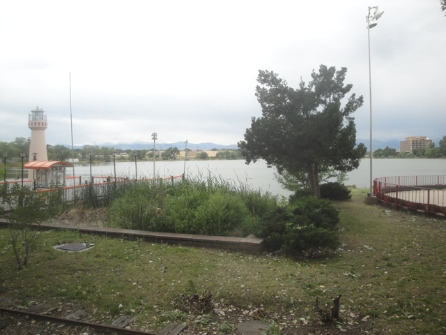
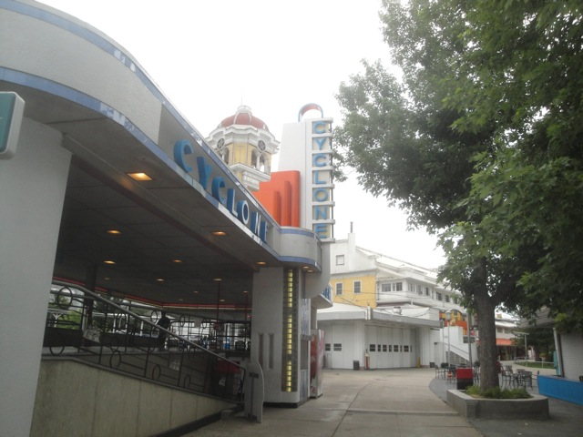
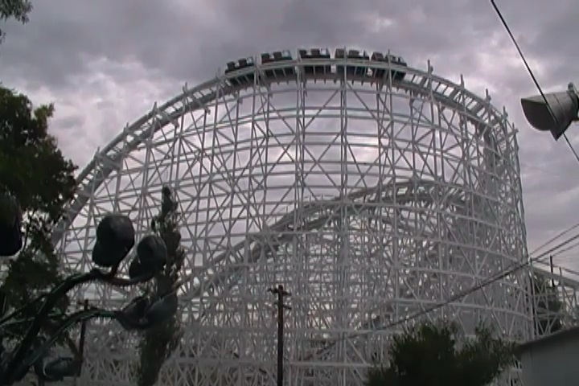
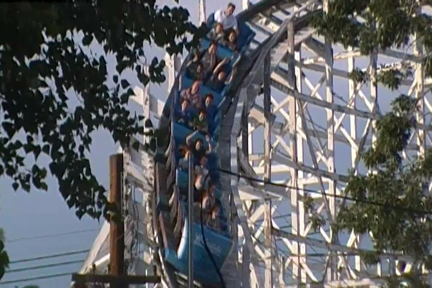
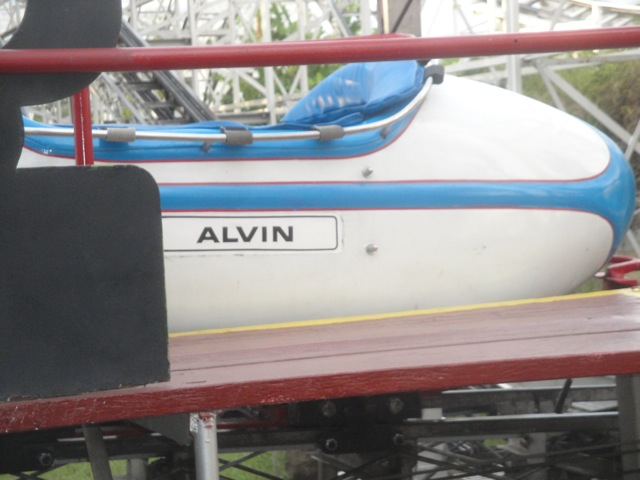
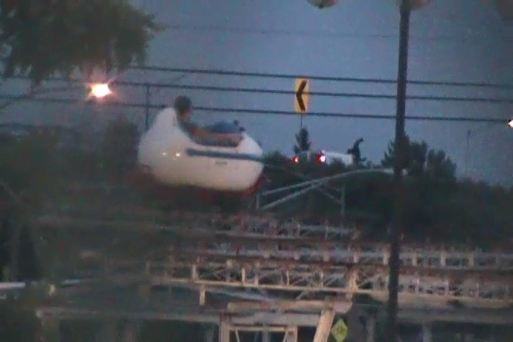
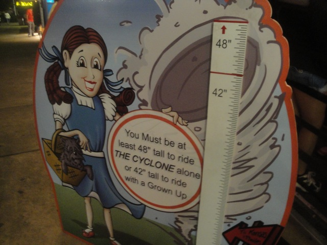

| |
Texas/Rocky Mtn Road Trip
Las Vegas/Castles'N'Coasters Six Flags Fiesta Texas Schlitterbahn
Sea World San Antonio Gavelston Pier
Six Flags Over Texas Silver Dollar City Frontier City Colorado
Elitch Gardens
Lakeside Park
Glenwood Springs

All right. Time for the second Denver park of the day. Lakeside Park. And while Elitch may be fun and have bigger rides, Lakeside Park is where the real fun is in Denver.
"Excuse me, but is this ferris wheel going to open tonight?"
 Well the park still doesn't open for a while, so we might as well just check out the park. And yeah. It looks nice.
Well the park still doesn't open for a while, so we might as well just check out the park. And yeah. It looks nice.
I just love the trapped in the 20s atmosphere that Lakeside Park has. =)
"In case you aren't smiling, Smile, Damn you. Smile."

Oh look at the time. Rides are starting open. Lets go get in line for some of these rides.
 Time for another nice classic wooden coaster. The Lakeside Cyclone.
Time for another nice classic wooden coaster. The Lakeside Cyclone.
Warning. Any mishappening on the Lakeside Cyclone, and this here'll be your fate.

Gotta admit. Lakeside Cyclone was a very interesting coaster. Not the best woodie by any means, but it was definetly unique and just a ton of fun.

This totally kicks Twister II's ass. No doubt about that.
 And yeah. The rest of the rides here are just your standard run of the mill flat rides.
And yeah. The rest of the rides here are just your standard run of the mill flat rides.
But the good news is that these flat rides are all run EXTREMELY WELL!!!! This scrambler had one of the best programs out of all the ones I've ridden. =)
These spider flat rides are awesome and a ton of fun, but yeah. I can see why they aren't in any big parks (The loading procedure for these is AWFUL!!!).
It wouldn't be a classic old-school park without a carosuel dating back to the early 20th century.
This park is so awesome that they even got the money to get the rights to use Mr. Incredible from the Incredibles. Cause as you can clearly see, this park is LOADED with cash.
Another popular attraction here is that they have a train that goes around the lake.
Oh well. Thats a bummer, not the end of the world though.
In case you got lost and needed to be reminded where you are.
Not sure why this is listed as one of the thrill rides here, but its powered, so I can just ignore it.
I kept hearing about how good the drop tower is at Lakeside Park. But unfortunetly, it broke down right as I was about to get on it. =(
As far as I'm concerned, this ride doesn't exist.
Stork: "I say Mr. Fox. Do you notice anything unusual about the clinetele today?"
Fox: "Just shut up and take their money."
Congratulations. And yeah, you can tell that this place is 100 years old.
 All right. Time for the real star attraction of Lakeside Park. Wild Chipmunk.
All right. Time for the real star attraction of Lakeside Park. Wild Chipmunk.

There's not really anything holding you in. You're pretty much just riding in a giant bathtub.
 This may look similar to other Wild Mice such as Treetop Racers, but this is MUCH wilder than any other Wild Mouse I've ridden.
This may look similar to other Wild Mice such as Treetop Racers, but this is MUCH wilder than any other Wild Mouse I've ridden.
 It literally feels like you're going to fall off these turns.
It literally feels like you're going to fall off these turns.
 Trust me. This ride has a POWERFUL bite to it!!! Definetly give it a ride or two while at Lakeside Park.
Trust me. This ride has a POWERFUL bite to it!!! Definetly give it a ride or two while at Lakeside Park.

Oh that Sharp Curve sign isn't for the road up ahead. That's there for the Wild Chipmunk.
Sweet!!! They have a Rock-O-Plane here. These things are awesome. =)
 Hey. Don't underestimate the soft serve Ice Cream here. This stuff is really freaking good.
Hey. Don't underestimate the soft serve Ice Cream here. This stuff is really freaking good.
Dinner here may not be anything special, but this place is actually cheap. No guilt about buying food here in even the slightest bit.
Once the sun goes down, thats when Lakeside Park really starts to come alive.
You know, I haven't seen these Kamakazie style flat rides at many parks. Not surprising due to their low capacity, but they're a fun bunch of rides.
Ah dammit!! If I had known this would be closed, I would've bothered to do the one at Castles'N'Coasters instead of just rushing off to San Antonio. Oh well.
I just love the atmosphere of this place at night.
Look at all the pretty lights.
Again. Gotta give credit where credit is due. Best Flyers I've ridden so far.

One last ride on the Lakeside Cyclone sounds like a good way to cap out a great night at Lakeside Park.
 All in all, I gotta say, I was really impressed with Lakeside Park. It may look like a cheap little credit whoring stop, but this park is so much more with rides running at their full potential and just coming to life at night. I'd call it the best park in Colorado, except there's really no competition here, so its kind of pointless. I loved the place and will absolutely be returning next time I'm in Denver.
All in all, I gotta say, I was really impressed with Lakeside Park. It may look like a cheap little credit whoring stop, but this park is so much more with rides running at their full potential and just coming to life at night. I'd call it the best park in Colorado, except there's really no competition here, so its kind of pointless. I loved the place and will absolutely be returning next time I'm in Denver.
Glenwood Springs
Home
|